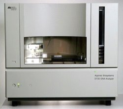
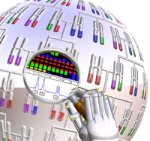

Introduction
Services Offered
Results
Pricing
Contact Us

Services Offered
The Allan Wilson Centre (AWC) was formed as a result of the New Zealand Government's Centres of Research Excellence initiative. The capital expenditure received allowed the AWC to purchase two ABI 3730 DNA Sequencers. The ABI 3730 DNA Analyser represents the next generation of high-throughput  sequencing and genotyping platforms. We offer the highest-quality sequencing and genotyping with maximum optical sensitivity; the highest quality available data at a cost cheaper than many of our competitors.
The ABI 3730 DNA Sequencers which were purchased by the Allan Wilson Centre now form the backbone of the New Zealand Genome Service. We are able to provide long read-length sequencing of plasmid clones and bacterial genomic DNA as well as rapid throughput sequencing of short  PCR products. The genotyping service also provides analysis of microsatellites and AFLPs. For standard sequencing we use the BigDye® Terminator v3.1 chemistry, with other chemistries available (eg. v1.1) if required.
Samples can be delivered personally or sent by courier to either our Albany, Auckland or Palmerston North centres. If you wish to use the courier service please contact us. The courier service is a free service to all New Zealand customers.
- Further information on our sequencing service.
- Further information on our genotyping service.
- Registration to use our service can be completed via the web.